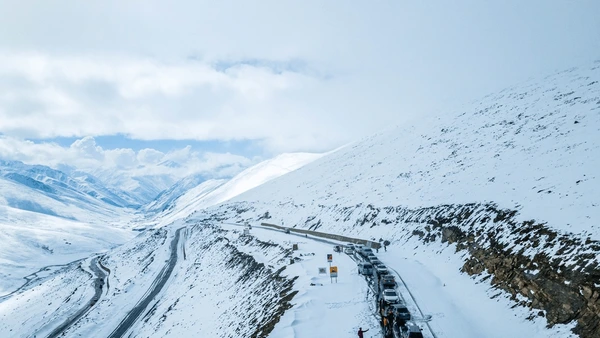

<div class="portfolio-single-load clearfix">
    <div class="custom-full-width-box">
        <div class="custom-container">
            <div class="custom-row align-items-center">
                <div class="custom-image-column">
                    
                </div>
                <div class="custom-text-column">
                    <h2 class="custom-heading">Babusar Top</h2>
                    <p class="custom-paragraph">
                        Babusar Valley or Babusar Region is a mountain pass in Pakistan at the north of the 150 km long Kaghan Valley, connecting it via the Thak Nala with Chilas on the Karakoram Highway. Babusar Top is the highest point in Kaghan Valley that can be easily accessed by cars.
                    </p>
                </div>
            </div>
        </div>
    </div><!-- .custom-full-width-box end -->

</div><!-- end single-project -->
